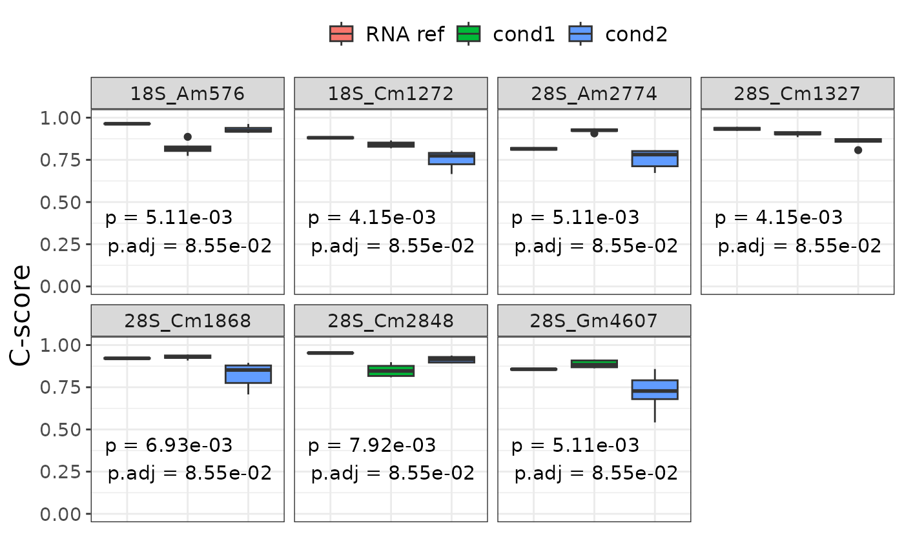

Display a boxplot between condition for each site where there is a sufficent difference between conditions. The Kruskal-Wallis p-value is displayed at the bottom left of each boxplot.
Usage
plot_diff_sites(
ribo,
factor_column,
p_cutoff = 0.01,
cscore_cutoff = 0.05,
adjust_pvalues_method = "fdr",
object_only = FALSE
)Arguments
- ribo
A RiboClass object.
- factor_column
Metadata column used to group samples by.
- p_cutoff
Cutoff for the adjusted p-value of the kruskal-wallis test.
- cscore_cutoff
Cutoff above which the max-min c-score range between conditions' mean is considered significant.
- adjust_pvalues_method
Method used to adjust p-value (one of p.adjust.methods)
- object_only
Return the results of the kruskal-wallis and C-score mean range in a dataframe directly.
Details
To be considered as differential, a site must follow two conditions :
Have a significant p-value on a Kruskal-wallis test on c-score between conditions.
Have a C-score range between conditions (max median - min mea) above a certain cutoff.
Both the p-value cutoff and c-score range cutoff can be changed with p_cutoff and cscore_cutoff parameters respectively.
Examples
data("ribo_toy")
data("human_methylated")
ribo_toy <- rename_rna(ribo_toy)
ribo_toy <- annotate_site(ribo_toy,human_methylated)
plot_diff_sites(ribo_toy,"condition", p_cutoff=0.1)
#> 7 significant sites found !
